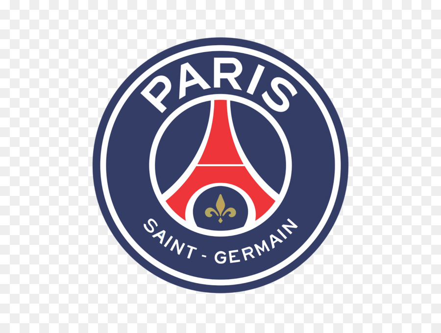
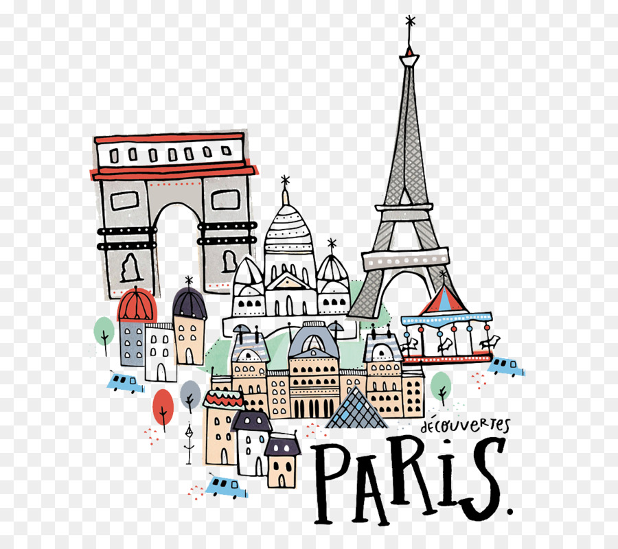

Pariz, grad svjetlosti, romantike i umjetnosti, često se naziva "Gradom svih gradova". Smješten na obalama rijeke Seine, Pariz je epicentar francuske kulture i povijesti, privlačeći milijune posjetitelja svake godine.
Ovaj grad je dom nekih od najpoznatijih svjetskih znamenitosti, uključujući Eiffelov toranj, simbol Francuske, koji dominira panoramom grada, katedralu Notre-Dame, remek-djelo gotičke arhitekture, te Louvre, jedan od najvećih i najvažnijih muzeja na svijetu, čuvar umjetničkih remek-djela poput Mona Lise i Venera iz Milo.
Pariz nije samo muzeji i spomenici; to je grad živopisnih četvrti poput Montmartrea, čuvenog po slikarskim ateljeima i boemskom duhu, te Latinske četvrti, s bogatom poviješću i mladenačkim vibracijama studenata.
Osim toga, Pariz je gastronomska meka, s brojnim restoranima, bistroima i tržnicama na kojima se mogu kušati francuski specijaliteti poput croissanta, baguettea i delikatnih francuskih sireva.
Pariz inspirira umjetnike, intelektualce i zaljubljenike diljem svijeta svojom ljepotom, romantikom i kulturnom raznolikošću, ostavljajući neizbrisiv trag u srcima svih koji ga posjete.
 Pariz je grad koji odiše šarmom i elegancijom, gdje svaki kutak ima svoju priču i svaki zalogaj nosi ukus tradicije. Prošetajte njegovim ulicama prepunim kafića i butika, uživajte u mirisu svježe pečenih baguettea i zvucima francuske šansone.
Svaki dio Pariza ima svoj karakter - od elegantnih bulevara Champs-Élysées do boemskog duha kvarta Marais, od povijesne četvrti Le Marais do modernog kompleksa La Défense. Svaka zgrada, svaki trg i svaki park čini vlastitu sliku tog jedinstvenog grada.
Pariz je također domaćin brojnim događanjima, od svjetski poznatih modnih revija do umjetničkih festivala, koncerata i sportskih natjecanja. Njegova dinamična scena nikada ne prestaje iznenađivati i oduševljavati.
| Red | Grad | Stanovništvo |
|---|---|---|
| 1 | Pariz | 2,148,271 |
| 2 | Marseille | 870,018 |
| 3 | Lyon | 513,275 |
| 4 | Toulouse | 479,553 |